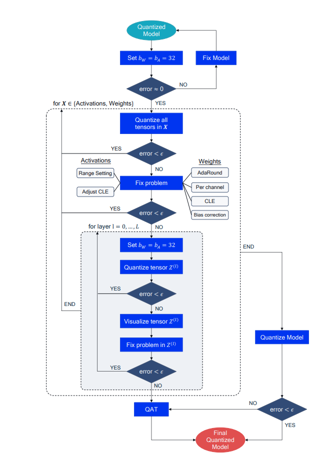

AIMET Quantization Features Guidebook¶
AIMET supports various neural network quantization techniques. A more in-depth discussion on various techniques and their usage is provided in User Guide
After applying an AIMET Quantization feature, if the model’s performance is still not satisfactory, we recommend a set of diagnostics steps to identify the bottlenecks and improve the performance. While this is not strictly an algorithm, these debugging steps can provide insights on why a quantized model underperforms and help to tackle the underlying issues. These steps are shown as a flow chart in figure 9 and are described in more detail below:
FP32 sanity check An important initial debugging step is to ensure that the floating-point and quantized model behave similarly in the forward pass, especially when using custom quantization pipelines. Set the quantized model bit-width to 32 bits for both weights and activation, or by-pass the quantization operation, if possible, and check that the accuracy matches that ofthe FP32 model.
Weights or activations quantization The next debugging step is to identify how activation or weight quantization impact the performance independently. Does performance recover if all weights are quantized to a higher bit-width while activations are kept in a lower bitwidth, or conversely if all activations use a high bit-width and activations a low bit-width? This step can show the relative contribution of activations and weight quantization to the overall performance drop and point us towards the appropriate solution.
Fixing weight quantization If the previous step shows that weight quantization does cause significant accuracy drop, then there are a few solutions to try: 1. Apply CLE if not already implemented, especially for models with depth-wise separable convolutions. 2. Try per-channel quantization. This will address the issue of uneven per-channel weight distribution. 3. Apply bias correction or AdaRound if calibration data is available
{kind=link}
Fixing activation quantization To reduce the quantization error from activation quantization, we can also try using different range setting methods or adjust CLE to take activation quantization ranges into account, as vanilla CLE can lead to uneven activation distribution.
Per-layer analysis If the global solutions have not restored accuracy to acceptable levels, we consider each quantizer individually. We set each quantizer sequentially, to the target bit-width while keeping the rest of the network to 32 bits (see inner for loop in figure above).
Visualizing layers If the quantization of a individual tensor leads to significant accuracy drop, we recommended visualizing the tensor distribution at different granularities, e.g. per-channel as in figure 5, and dimensions, e.g., per-token or per-embedding for activations in BERT.
Fixing individual quantizers The visualization step can reveal the source of the tensor’s sensitivity to quantization. Some common solutions involve custom range setting for this quantizer or allowing a higher bit-width for problematic quantizer. If the problem is fixed and the accuracy recovers, we continue to the next quantizer. If not, we may have to resort to other methods, such as quantization-aware training (QAT).
After completing the above steps, the last step is to quantize the complete model to the desired bit-width. If the accuracy is acceptable, we have our final quantized model ready to use. Otherwise, we can consider higher bit-widths and smaller granularities or revert to more powerful quantization methods, such as quantization-aware training.